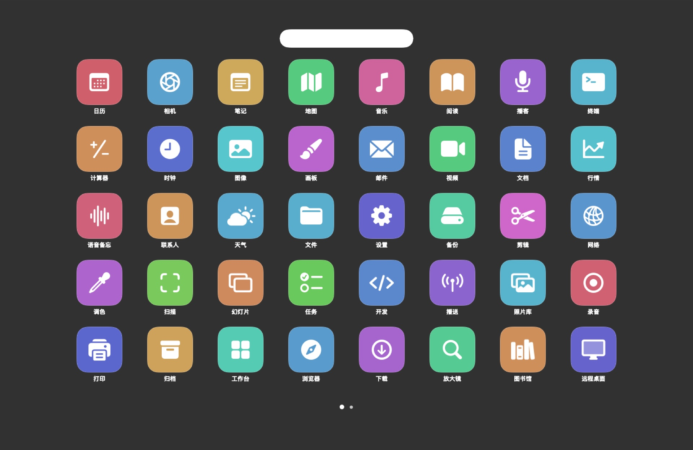

Mac 启动台
全屏浏览你的应用。记得位置就点图标，想快速打开就直接搜索。常用应用可以拖进同一个文件夹。
Apple 芯片 Mac · macOS 26 或更新版本
下载 DMG下载暂未开放
在 GitHub 查看此版本这是未公证的开发预览包。macOS 首次打开时可能要求在「系统设置 → 隐私与安全性」手动确认。Apple 安全打开说明

安装 Launch Reborn
- 下载并打开 DMG，将 Launch Reborn 拖入「应用程序」。
- 打开应用，在引导里选择触控角、快捷键或触控板捏合等打开方式。
- 若选择触控板捏合，按提示在系统设置中授予辅助功能权限。
已经装过旧版
升级前先用旧版导出布局备份。新版中的「设置 → 应用与数据 → 恢复布局」可读取兼容的 JSON 备份。恢复前可以预览结果，并备份当前布局。
更新时，先退出应用，下载新版 DMG，再将同名应用拖入「应用程序」并选择替换。
开发预览版使用独立布局，可与现有正式版并存。